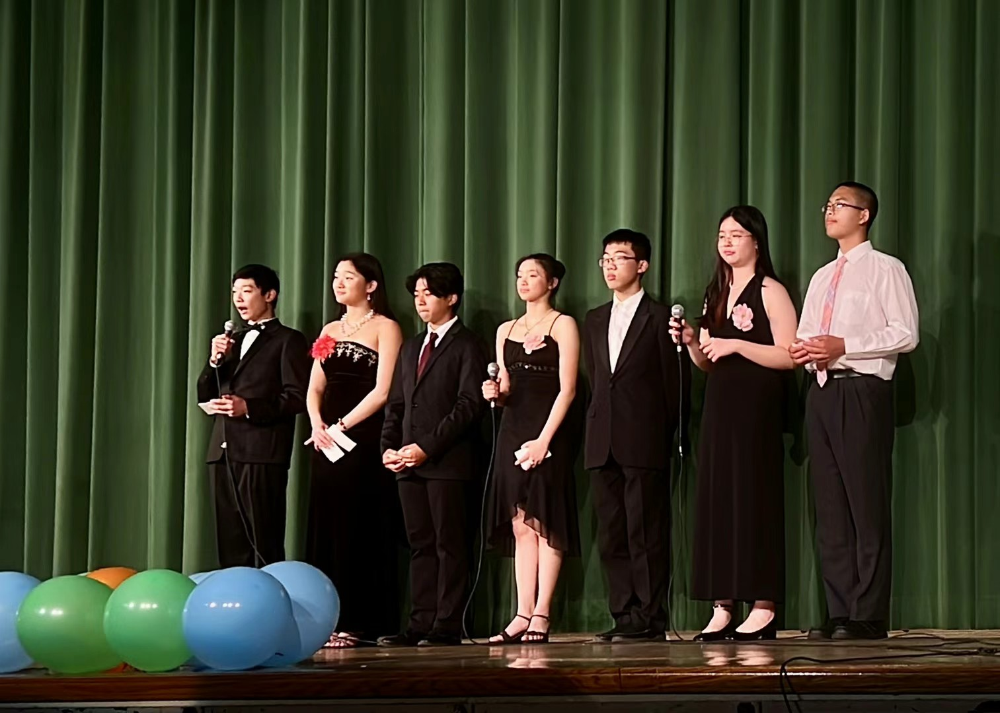

Up in front of a room
I’ve slowly realized that a lot of the things I enjoy are the same skill wearing different costumes: standing in front of people and getting something across. A proof, a pitch, a card trick — the underlying problem is identical, which is to make the room actually care.
One version is competitive. In DECA I present business cases to a panel of judges on the clock, and I’ve done alright at it — a state champion and a two-time international qualifier. It taught me how to think on my feet: build an argument fast, read the room, and sound sure of myself even when I’m half-improvising the next sentence.
The version I care about most is teaching. Somewhere between tutoring AP Calculus, TA-ing math at our Chinese school, and running Math Club, I had to actually learn how to talk — how to take something that’s obvious to me and make it land for someone it isn’t obvious to yet. That turns out to be harder than the math itself. Lately I’ve been chasing the same thing on my YouTube channel, @orz67, where I explain ideas with animation and can’t fall back on a whiteboard and some hand-waving.

Then there’s the pure-fun version: hosting. I’ve MC’d our Chinese school’s gala, worked a microphone for a whole evening’s program, and on any given day I’ll corner just about anyone to show them something I can’t stop thinking about.


The one nobody expects is card magic. Magic is presentation stripped down to its cleanest form — the entire trick is controlling what the audience notices, and when. When it works, the reveal lands the way a good proof does: you never saw it coming, and then it’s obvious.
My first trick, at thirteen, was an ace production built on a triple lift, then a double, then a single. The whole thing depends on the lift looking like one card. Mine didn’t. The double was visible from space and the triple was a war crime. I filmed myself, watched it back, and concluded my hands had the dexterity of a polite raccoon.
So I switched to self-working tricks, the ones where modular arithmetic and permutation parity do the work and your hands just deal in the right order. The cleanest of them is the Gilbreath principle, and it’s the reason I stopped thinking of magic and math as separate hobbies.
Interactive · Gilbreath principle
Run the shuffle yourself
Twelve cards, strictly alternating red and black. You’ll cut, then riffle shuffle (the app randomizes the interleave, the way a real riffle does), then deal in pairs. The claim: every pair comes out one red, one black. Every time. No marked cards, no sleight — just a fact about how a riffle interacts with an alternating sequence. Run it as many times as it takes to get suspicious.
Twelve cards, alternating red and black. Hit Cut deck to start.
The proof is short enough to ruin the trick, which I think is the best possible property for a trick to have. Cut an alternating deck and the two halves either start on the same color or opposite ones; a riffle then drops cards from one half or the other, and in both cases the parity of what’s left forces consecutive pairs to split colors. Once someone asks why does that work, you’re not doing magic anymore. You’re doing math with cards as props, which is the version I actually like.
Interactive · flourishes
The part that’s just showing off
Self-working tricks got me in the door, but the hands did eventually improve. Somewhere in eleventh grade I came back to the double lift and could finally make it look like one card, then the pinky break, the side steal, and a center deal that’s still ugly but no longer a war crime. Flourishes are the purely decorative end of that — no method to hide, nothing to misdirect, just the deck doing something pretty on the way to the trick.
Squared up, in the hands. Pick a flourish.
I don’t perform much. I do tricks for friends in the math room when a problem has beaten us and we need ten minutes off, and for kids at Chinese-school events who’ll watch a self-working trick three times before asking whether I’m just doing math at them. Yes. Obviously yes.
Underneath all of it is the same small thrill — the moment a room shifts because you finally got something across. Pitch, lecture, or sleight of hand, that’s the part I’m actually chasing.